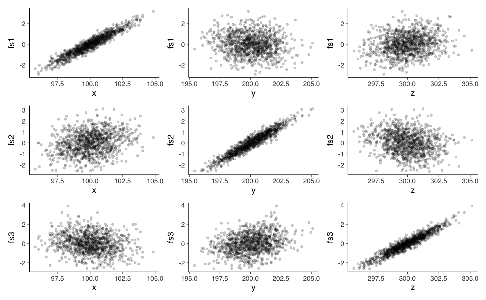

# Carica il file _common.R per impostazioni di pacchetti e opzioni
here::here("code", "_common.R") |> source()
# Carica pacchetti aggiuntivi
pacman::p_load(lavaan, semPlot, corrplot, tidyr, kableExtra)28 I punteggi fattoriali
Prerequisiti
- Leggere il capitolo 6, Factor Analysis and Principal Component Analysis, del testo Principles of psychological assessment di Petersen (2024).
Concetti e Competenze Chiave
Preparazione del Notebook
Uno dei momenti più difficili nel processo di sviluppo di un test psicometrico è quello dell’interpretazione dei fattori. La verifica del livello di affidabilità rivela il grado di precisione delle misure ottenute ma non fornisce alcuna informazione sulla natura di ciò che si sta misurando. Non esistono specifiche indicazioni che guidino il lavoro interpretativo. Dipende, perciò, dalla capacità e dall’esperienza del ricercatore cogliere il significato comune delle variabili confluite in un fattore, attenendosi alla realtà delle singole variabili senza fornire interpretazioni fantasiose. È importante rendersi conto che sia la scelta del metodo di estrazione dei fattori, sia il problema del numero dei fattori da estrarre, sia la scelta del metodo con cui effettuare la rotazione, rendono molto arbitraria l’interpretazione della soluzione fattoriale.
I passaggi teorici necessari per interpretare una matrice fattoriale ruotata possono essere descritti nel modo seguente.
Si definisce un livello arbitrario per le saturazioni che ci indichi il limite oltre il quale non riteniamo le variabili sufficientemente importanti per caratterizzare quel determinato fattore. Solitamente si sceglie la soglia di .40. In casi particolari è possibile usare valori maggiori o minori di questo, a seconda che si abbia un numero ristretto o troppo ampio di variabili da interpretare.
Si ordinano le saturazioni delle variabili del fattore in ordine decrescente (in valore assoluto), fermandosi al livello prescelto.
Si scrive accanto ad ogni saturazione la denominazione della variabile corrispondente (o il testo dell’item).
Tenendo presente il dominio di indagine, le teorie di riferimento ed eventuali risultati precedenti, si cerca di stabilire quale sia il tratto, caratteristica o aspetto che queste variabili abbiano in comune, in modo da poter in modo da poter “nominare” il fattore che definisce questo tratto comune. In questo processo interpretativo gli item con le saturazioni maggiori contribuiscono in misura maggiore alla definizione del carattere comune del fattore e, viceversa, ciò che è stato individuato come tratto comune delle variabili deve comparire in maggior grado nelle variabili più sature.
Il segno negativo di una saturazione indica solamente un’opposizione rispetto alle saturazioni positive. Il tratto comune alle variabili dovrebbe essere pensato come un continuum che passa dalla sua massima presenza al suo opposto. Per procedere all’interpretazione conviene iniziare dalle variabili il cui segno è più frequente e considerarle come se fossero positive; di conseguenza, le altre (siano esse di segno positivo o negativo) devono essere considerate di segno opposto.
Nel caso in cui non si riesca a riscontrare nessun tratto comune alle variabili del fattore, si dovrà concludere che il fattore non è interpretabile e che le variabili sono state tra loro associate per un errore attribuibile o al campione o alla misurazione delle variabili stesse. Normalmente i “primi” fattori estratti sono facilmente interpretabili mentre gli “ultimi”, soprattutto se ne sono stati estratti molti o se la matrice delle correlazioni iniziale fra le variabili contiene molti valori bassi, sono spesso difficilmente interpretabili o saturi di una sola variabile e quindi fattori specifici di quella variabile. In linea di massima se i fattori non interpretabili sono molti è meglio non considerare affatto i risultati dell’analisi fattoriale.
28.0.1 Esempio di interpretazione
Il WISC-III (Wechsler Intelligence Scale For Children - III) valuta l’abilità intellettiva di soggetti dai 6 ai 16 anni e 11 mesi. I subtest sono stati selezionati per valutare diverse abilità mentali, che tutte insieme indicano l’abilità intellettiva generale del bambino. Alcuni gli richiedono un ragionamento astratto, altri si focalizzano sulla memoria, altri ancora richiedono certe abilità percettive e così via.
Si consideri la matrice di correlazione tra i subtest della scala WISC-III riportata dal manuale.
lower <- '
1
.66 1
.57 .55 1
.70 .69 .54 1
.56 .59 .47 .64 1
.34 .34 .43 .35 .29 1
.47 .45 .39 .45 .38 .25 1
.21 .20 .27 .26 .25 .23 .18 1
.40 .39 .35 .40 .35 .20 .37 .28 1
.48 .49 .52 .46 .40 .32 .52 .27 .41 1
.41 .42 .39 .41 .34 .26 .49 .24 .37 .61 1
.35 .35 .41 .35 .34 .28 .33 .53 .36 .45 .38 1
.18 .18 .22 .17 .17 .14 .24 .15 .23 .31 .29 .24 1
'wisc_III_cov <- getCov(
lower,
names = c(
"INFO", "SIM", "ARITH", "VOC", "COMP", "DIGIT", "PICTCOM",
"CODING", "PICTARG", "BLOCK", "OBJECT", "SYMBOL", "MAZES"
)
)Eseguiamo l’analisi fattoriale con il metodo delle componenti principali e una rotazione Varimax:
f_pc <- psych::principal(wisc_III_cov, nfactors = 3, rotate = "varimax")
print(f_pc)Principal Components Analysis
Call: psych::principal(r = wisc_III_cov, nfactors = 3, rotate = "varimax")
Standardized loadings (pattern matrix) based upon correlation matrix
RC1 RC3 RC2 h2 u2 com
INFO 0.80 0.25 0.09 0.72 0.28 1.2
SIM 0.81 0.25 0.08 0.72 0.28 1.2
ARITH 0.65 0.26 0.28 0.57 0.43 1.7
VOC 0.83 0.19 0.13 0.75 0.25 1.2
COMP 0.75 0.14 0.16 0.60 0.40 1.2
DIGIT 0.45 0.06 0.36 0.34 0.66 2.0
PICTCOM 0.43 0.61 0.02 0.56 0.44 1.8
CODING 0.10 0.09 0.88 0.79 0.21 1.0
PICTARG 0.34 0.45 0.27 0.39 0.61 2.6
BLOCK 0.41 0.66 0.22 0.66 0.34 1.9
OBJECT 0.31 0.71 0.14 0.62 0.38 1.5
SYMBOL 0.23 0.32 0.74 0.70 0.30 1.6
MAZES -0.06 0.71 0.11 0.51 0.49 1.1
RC1 RC3 RC2
SS loadings 3.80 2.37 1.74
Proportion Var 0.29 0.18 0.13
Cumulative Var 0.29 0.47 0.61
Proportion Explained 0.48 0.30 0.22
Cumulative Proportion 0.48 0.78 1.00
Mean item complexity = 1.5
Test of the hypothesis that 3 components are sufficient.
The root mean square of the residuals (RMSR) is 0.07
Fit based upon off diagonal values = 0.97Si noti che i primi cinque subtest possiedono saturazioni maggiori di \(0.6\) sul primo fattore. Dato che questi test sono tutti presentati verbalmente e richiedono delle risposte verbali, tale fattore può essere denominato Comprensione Verbale.
I subtest “Cifrario” e “Ricerca di simboli” saturano sul secondo fattore. Entrambi i subtest misurano la velocità dei processi di codifica o ricerca. Questo fattore, dunque, può essere denominato Velocità di elaborazione.
Infine, i subtest “Completamento di figure,” “Disegno con i cubi,” “Riordinamento di storie figurate” e “Labirinti” saturano sul terzo fattore. Tutti questi test condividono una componente geometrica o configurazionale: misurano infatti le abilità necessarie per la manipolazione o la disposizione di immagini, oggetti, blocchi. Questo fattore, dunque, può essere denominato Organizzazione percettiva.
Nel caso di una rotazione ortogonale, la comunalità di ciascuna sottoscala è uguale alla somma delle saturazioni fattoriali al quadrato della sottoscala nei fattori.
Per le 13 sottoscale del WISC-III abbiamo:
h2 <- rep(0,13)
for (i in 1:13) {
h2[i] <- sum(f_pc$loadings[i, ]^2)
}
round(h2, 2)- 0.72
- 0.72
- 0.57
- 0.75
- 0.6
- 0.34
- 0.56
- 0.79
- 0.39
- 0.66
- 0.62
- 0.7
- 0.51
Questi risultati replicano quelli riportati nel manuale del test WISC-III.
28.1 Punteggi fattoriali
Fino ad ora abbiamo considerato le strategie di costruzione del modello basate sulla stima e sull’interpretazione delle saturazioni fattoriali e delle comunalità. Questo è il primo passo nella costruzione del modello fattoriale. È però possibile compiere un passo ulteriore, ovvero quello della stima dei punteggi fattoriali (factor scores) i quali risultano utili sia per interpretare i risultati dell’analisi fattoriale che per fare diagnostica. I punteggi fattoriali forniscono le previsioni dei livelli dei fattori latenti per ogni rispondente. Esistono vari metodi di stima dei punteggi fattoriali. Tra questi troviamo il metodo di Thomson basato sulla regressione e il metodo di Bartlett basato sulla massima verosimiglianza. Entrambi questi metodi sono implementati nel software .
28.1.1 Stima dei punteggi fattoriali
Si definiscono punteggi fattoriali i valori assunti dai fattori comuni (inosservabili) in corrispondenza delle osservazioni campionarie. Il metodo di Thomson stima i punteggi fattoriali in base all’approccio della regressione multipla, ovvero, impiegando la matrice delle correlazioni tra le variabili e la matrice di struttura (ovvero, la matrice delle correlazioni delle variabili con i fattori). Per ottenere le stime dei punteggi fattoriali con il metodo di Thomson è necessario specificare nella funzione factanal() l’opzione scores = "regression".
28.1.2 Dimostrazione di Thurstone
Prima di descrivere il metodo della regressione, esaminiamo la dimostrazione che Thurstone (1947) ha fornito per illustrare il significato dei punteggi fattoriali (si veda Loehlin, 1987). L’idea è quella di esaminare la stima dei punteggi fattoriali in una situazione in cui i tali punteggi sono conosciuti, in maniera tale da potere controllare il risultato dell’analisi.
Si consideri un insieme di 1000 scatole di cui conosciamo le dimensioni \(x, y, z\):
set.seed(123)
n <- 1e3
x <- rnorm(n, 100, 1.5)
y <- rnorm(n, 200, 1.5)
z <- rnorm(n, 300, 1.5)Il problema è quello di stimare le dimensioni delle scatole disponendo soltanto di una serie di misure indirette, corrotte dal rumore di misura. Thurstone (1947) utilizzò le seguenti trasformazioni delle dimensioni delle scatole (si veda Jennrich, 2007).
s <- 40
y1 <- rnorm(n, mean(x), s)
y2 <- rnorm(n, mean(y), s)
y3 <- rnorm(n, mean(z), s)
y4 <- x * y + rnorm(n, 0, s)
y5 <- x * z + rnorm(n, 0, s)
y6 <- y * z + rnorm(n, 0, s)
y7 <- x^2 * y + rnorm(n, 0, s)
y8 <- x * y^2 + rnorm(n, 0, s)
y9 <- x^2 * z + rnorm(n, 0, s)
y10 <- x * z^2 + rnorm(n, 0, s)
y11 <- y^2 * z + rnorm(n, 0, s)
y12 <- y * z^2 + rnorm(n, 0, s)
y13 <- y^2 * z + rnorm(n, 0, s)
y14 <- y * z^2 + rnorm(n, 0, s)
y15 <- x / y + rnorm(n, 0, s)
y16 <- y / x + rnorm(n, 0, s)
y17 <- x / z + rnorm(n, 0, s)
y18 <- z / x + rnorm(n, 0, s)
y19 <- y / z + rnorm(n, 0, s)
y20 <- z / y + rnorm(n, 0, s)
y21 <- 2 * x + 2*y + rnorm(n, 0, s)
y22 <- 2 * x + 2*z + rnorm(n, 0, s)
y23 <- 2 * y + 2*z + rnorm(n, 0, s)Eseguiamo l’analisi fattoriale con una soluzione a tre fattori sui dati così creati.
Y <- cbind(
y1, y2, y3, y4, y5, y6, y7, y8, y9,
y10, y11, y12, y13, y14, y15, y16,
y17, y18, y19, y20, y21, y22, y23
)
fa <- factanal(
Y,
factors = 3,
scores = "regression",
lower = 0.01
)L’opzione scores = "regression" richiede il calcolo dei punteggi fattoriali con il metodo della regressione. Nel caso di una rotazione Varimax (default della funzione factanal()), i punteggi fattoriali risultano ovviamente incorrelati:
cor(
cbind(fa$scores[, 1], fa$scores[, 2], fa$scores[, 3])
) %>%
round(3)| 1.000 | 0.002 | -0.001 |
| 0.002 | 1.000 | 0.005 |
| -0.001 | 0.005 | 1.000 |
Generiamo ora i diagrammi di dispersione che mettono in relazione le dimensioni originarie delle scatole (\(x, y, z\)) con i punteggi fattoriali sui tre fattori. Se l’analisi ha successo, ci aspettiamo un’alta correlazione tra i punteggi fattoriali di ogni fattore e una sola delle dimensioni delle scatole \(x\), \(y\), \(z\).
p1 <- tibble(x, fs1 = fa$scores[, 1]) %>%
ggplot(aes(x, fs1)) +
geom_point(alpha = 0.2)
p2 <- tibble(y, fs1 = fa$scores[, 1]) %>%
ggplot(aes(y, fs1)) +
geom_point(alpha = 0.2)
p3 <- tibble(z, fs1 = fa$scores[, 1]) %>%
ggplot(aes(z, fs1)) +
geom_point(alpha = 0.2)
p4 <- tibble(x, fs2 = fa$scores[, 2]) %>%
ggplot(aes(x, fs2)) +
geom_point(alpha = 0.2)
p5 <- tibble(y, fs2 = fa$scores[, 2]) %>%
ggplot(aes(y, fs2)) +
geom_point(alpha = 0.2)
p6 <- tibble(z, fs2 = fa$scores[, 2]) %>%
ggplot(aes(z, fs2)) +
geom_point(alpha = 0.2)
p7 <- tibble(x, fs3 = fa$scores[, 3]) %>%
ggplot(aes(x, fs3)) +
geom_point(alpha = 0.2)
p8 <- tibble(y, fs3 = fa$scores[, 3]) %>%
ggplot(aes(y, fs3)) +
geom_point(alpha = 0.2)
p9 <- tibble(z, fs3 = fa$scores[, 3]) %>%
ggplot(aes(z, fs3)) +
geom_point(alpha = 0.2)(p1 | p2 | p3) /
(p4 | p5 | p6) /
(p7 | p8 | p9) 
I risultati riportati nella figura confermano le aspettative.
Il metodo della regressione pone il problema della stima dei punteggi fattoriali nei termini di una ideale regressione di ogni fattore rispetto a tutte le variabili osservate. Per il fattore \(j\)-esimo, si può scrivere la seguente equazione:
\[ \begin{aligned} F_j =& \beta_{1j}y_1 + \dots + \beta_{pm}y_p + \varepsilon_j \end{aligned} \]
dove \(F_j\) sono i punteggi fattoriali e \(y\) sono le variabili osservate standardizzate \((Y-\bar{Y})/s\). In forma matriciale, il modello diventa
\[ \textbf{F} = \textbf{y} \textbf{B} + \boldsymbol{\varepsilon} \]
I coefficienti parziali di regressione B sono ignoti. Tuttavia, possono essere calcolati utilizzando i metodi della regressione lineare. Nel modello di regressione, infatti, i coefficienti dei minimi quadrati possono essere calcolati utilizzando due matrici di correlazioni: la matrice \(\textbf{R}_{xx}\) (le correlazioni tra le variabili \(X\)) e la matrice \(\textbf{R}_{xy}\) (le correlazioni tra le variabili \(X\) e la variabile \(Y\):
\[ \hat{\textbf{B}} = \textbf{R}_{xx}^{-1}\textbf{R}_{xy} \]
Nel caso dell’analisi fattoriale, \(\textbf{R}_{xx}\) corrisponde alla matrice delle correlazioni tra le variabili osservate e \(\textbf{R}_{xy}\) corrisponde alla matrice di struttura (la matrice delle correlazioni tra le variabili osservate e i fattori). Se i fattori sono ortogonali, la matrice di struttura coincide con la matrice dei pesi fattoriali \(\hat{\boldsymbol{\Lambda}}\).
I coefficienti B dell’equazione precedente possono dunque essere trovati nel modo seguente:
\[ \begin{equation} \hat{\textbf{B}} = \textbf{R}_{yy}^{-1}\textbf{R}_{xf}= \textbf{R}^{-1}\hat{\boldsymbol{\Lambda}} \end{equation} \]
Una volta stimati i coefficienti \(\hat{\textbf{B}}\), i punteggi fattoriali si calcolano allo stesso modo dei punteggi teorici del modello di regressione:
\[ \begin{equation} \hat{\textbf{F}} = \textbf{y} \hat{\textbf{B}} = \textbf{y} \textbf{R}^{-1}\hat{\boldsymbol{\Lambda}}, \end{equation} \]
dove \(\textbf{y}\) è la matrice delle variabili osservate standardizzate \((Y-\bar{Y})/s\).
Esercizio. Si utilizzino i dati dass21.txt che corrispondono alla somministrazione del test DASS-21 a 334 partecipanti. Lo schema di codifica si può trovare seguendo questo link. Ci si focalizzi sulla sottoscala Stress del DASS-21. Si trovino i punteggi fattoriali usando la funzione factanal() e si replichi il risultato seguendo la procedura delineata sopra.
28.2 Session Info
sessionInfo()R version 4.4.1 (2024-06-14)
Platform: aarch64-apple-darwin20
Running under: macOS 15.0.1
Matrix products: default
BLAS: /Library/Frameworks/R.framework/Versions/4.4-arm64/Resources/lib/libRblas.0.dylib
LAPACK: /Library/Frameworks/R.framework/Versions/4.4-arm64/Resources/lib/libRlapack.dylib; LAPACK version 3.12.0
locale:
[1] C
time zone: Europe/Rome
tzcode source: internal
attached base packages:
[1] stats graphics grDevices utils datasets methods
[7] base
other attached packages:
[1] kableExtra_1.4.0 corrplot_0.94 nortest_1.0-4
[4] MASS_7.3-61 ggokabeito_0.1.0 viridis_0.6.5
[7] viridisLite_0.4.2 ggpubr_0.6.0 ggExtra_0.10.1
[10] gridExtra_2.3 patchwork_1.3.0 bayesplot_1.11.1
[13] semTools_0.5-6 semPlot_1.1.6 lavaan_0.6-19
[16] psych_2.4.6.26 scales_1.3.0 markdown_1.13
[19] knitr_1.48 lubridate_1.9.3 forcats_1.0.0
[22] stringr_1.5.1 dplyr_1.1.4 purrr_1.0.2
[25] readr_2.1.5 tidyr_1.3.1 tibble_3.2.1
[28] ggplot2_3.5.1 tidyverse_2.0.0 here_1.0.1
loaded via a namespace (and not attached):
[1] rstudioapi_0.16.0 jsonlite_1.8.9 magrittr_2.0.3
[4] TH.data_1.1-2 estimability_1.5.1 farver_2.1.2
[7] nloptr_2.1.1 rmarkdown_2.28 vctrs_0.6.5
[10] Cairo_1.6-2 minqa_1.2.8 base64enc_0.1-3
[13] rstatix_0.7.2 htmltools_0.5.8.1 broom_1.0.7
[16] Formula_1.2-5 htmlwidgets_1.6.4 plyr_1.8.9
[19] sandwich_3.1-1 emmeans_1.10.4 zoo_1.8-12
[22] uuid_1.2-1 igraph_2.0.3 mime_0.12
[25] lifecycle_1.0.4 pkgconfig_2.0.3 Matrix_1.7-0
[28] R6_2.5.1 fastmap_1.2.0 shiny_1.9.1
[31] digest_0.6.37 OpenMx_2.21.12 fdrtool_1.2.18
[34] colorspace_2.1-1 rprojroot_2.0.4 Hmisc_5.1-3
[37] labeling_0.4.3 fansi_1.0.6 timechange_0.3.0
[40] abind_1.4-8 compiler_4.4.1 withr_3.0.1
[43] glasso_1.11 htmlTable_2.4.3 backports_1.5.0
[46] carData_3.0-5 ggsignif_0.6.4 corpcor_1.6.10
[49] gtools_3.9.5 tools_4.4.1 pbivnorm_0.6.0
[52] foreign_0.8-87 zip_2.3.1 httpuv_1.6.15
[55] nnet_7.3-19 glue_1.8.0 quadprog_1.5-8
[58] promises_1.3.0 nlme_3.1-166 lisrelToR_0.3
[61] grid_4.4.1 pbdZMQ_0.3-13 checkmate_2.3.2
[64] cluster_2.1.6 reshape2_1.4.4 generics_0.1.3
[67] gtable_0.3.5 tzdb_0.4.0 data.table_1.16.0
[70] hms_1.1.3 xml2_1.3.6 car_3.1-3
[73] utf8_1.2.4 sem_3.1-16 pillar_1.9.0
[76] IRdisplay_1.1 rockchalk_1.8.157 later_1.3.2
[79] splines_4.4.1 lattice_0.22-6 survival_3.7-0
[82] kutils_1.73 tidyselect_1.2.1 miniUI_0.1.1.1
[85] pbapply_1.7-2 svglite_2.1.3 stats4_4.4.1
[88] xfun_0.48 qgraph_1.9.8 arm_1.14-4
[91] stringi_1.8.4 pacman_0.5.1 boot_1.3-31
[94] evaluate_1.0.0 codetools_0.2-20 mi_1.1
[97] cli_3.6.3 RcppParallel_5.1.9 IRkernel_1.3.2
[100] rpart_4.1.23 systemfonts_1.1.0 xtable_1.8-4
[103] repr_1.1.7 munsell_0.5.1 Rcpp_1.0.13
[106] coda_0.19-4.1 png_0.1-8 XML_3.99-0.17
[109] parallel_4.4.1 jpeg_0.1-10 lme4_1.1-35.5
[112] mvtnorm_1.3-1 openxlsx_4.2.7.1 crayon_1.5.3
[115] rlang_1.1.4 multcomp_1.4-26 mnormt_2.1.1